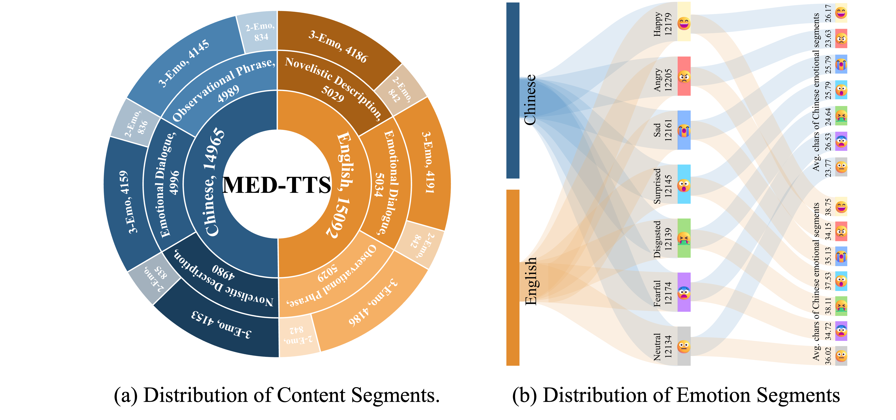
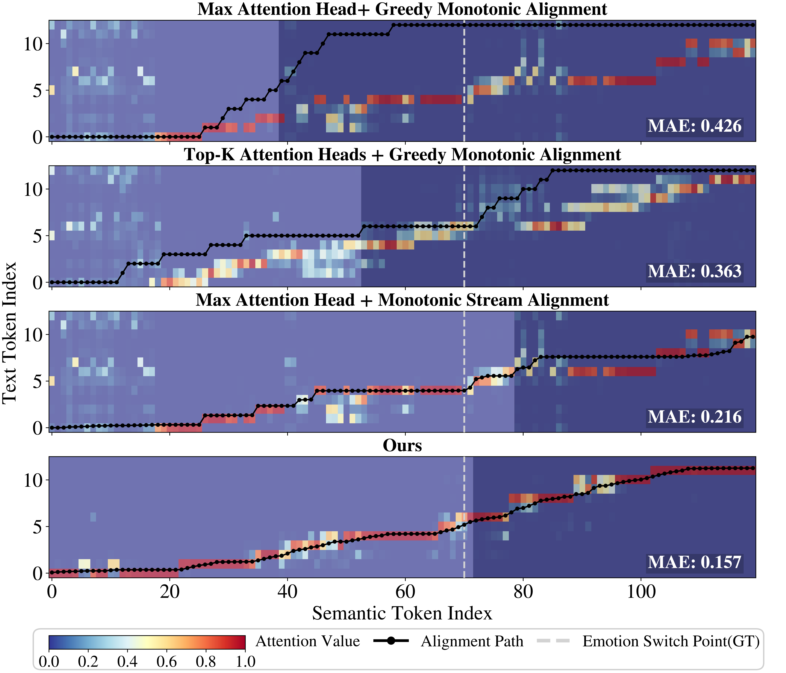

01 Abstract
While controllable Text-to-Speech (TTS) has achieved notable progress, most existing methods remain limited to inter-utterance-level control, making fine-grained intra-utterance expression challenging due to their reliance on non-public datasets or complex multi-stage training. In this paper, we propose TED-TTS, a training-free controllable framework for pretrained zero-shot TTS to enable intra-utterance emotion and duration expression. Specifically, we propose a segment-aware emotion conditioning strategy that combines causal masking with monotonic stream alignment filtering to isolate emotion conditioning and schedule mask transitions, enabling smooth intra-utterance emotion shifts while preserving global semantic coherence. Based on this, we further propose a segment-aware duration steering strategy combining local duration embedding steering with global EOS logit modulation, allowing local duration adjustment while ensuring globally consistent termination. To eliminate the need for segment-level manual prompt engineering, we construct a 30,000-sample multi-emotion and duration-annotated text dataset (MED-TTS) to enable LLM-based automatic prompt construction. Extensive experiments demonstrate that our training-free method achieves state-of-the-art intra-utterance consistency in multi-emotion and duration control, while maintaining baseline-level speech quality of the underlying TTS model.
02 Framework Overview
Task Definition & Architecture Overview (Fig. 1 · 2 · 3)


03 Dataset — MED-TTS
To eliminate the need for segment-level manual prompt engineering, we construct MED-TTS, a Multi-Emotion and Duration-annotated Text dataset with 30,000 samples covering English and Chinese. MED-TTS supports two prompting modalities: (a) Speech-referenced — audio clips matched to target emotion and speaker; and (b) Text-referenced — natural language descriptions of the desired emotional expression.
Dataset schema — each sample contains:
| Field | Type | Description |
|---|---|---|
| sample_id | string | Unique sample identifier (e.g. en_000000). |
| meta | object | Language (en/zh), text category, annotation type, and generation model. |
| utterance | object | Full utterance text and the ordered emotion flow sequence across segments. |
| segments | list | Per-segment text span, emotion label, natural language emotion description, duration estimate (seconds), and start/end timestamps. |

MED-TTS is released for non-commercial research purposes only. The dataset was synthetically constructed using large language models (GPT-4o, DeepSeek-Chat); any use must cite our paper and comply with the terms of service of the respective LLM providers.
04 Results & Ablation
Table 1 — Emotion Control (Speech Emotion Prompt)
| Model | WER/CER↓ | SSIM↑ | OVRL↑ | SMOS↑ | NMOS↑ | EMOS↑ | |
|---|---|---|---|---|---|---|---|
| EN | MaskGCT | 3.520 | 0.347 | 3.275 | 2.96±0.34 | 2.77±0.28 | 3.64±0.24 |
| F5TTS | 2.632 | 0.353 | 3.330 | 3.33±0.36 | 3.40±0.32 | 3.56±0.28 | |
| SparkTTS | 2.433 | 0.358 | 3.404 | 3.49±0.29 | 3.27±0.31 | 3.44±0.29 | |
| CosyVoice2 | 1.411 | 0.402 | 3.316 | 3.33±0.31 | 2.87±0.32 | 3.31±0.28 | |
| IndexTTS2 | 2.454 | 0.457 | 3.304 | 3.20±0.36 | 2.98±0.30 | 4.07±0.26 | |
| Ours | 2.519 | 0.485 | 3.395 | 4.00±0.24 | 4.20±0.23 | 3.42±0.30 | |
| ZH | MaskGCT | 7.221 | 0.350 | 3.278 | 2.80±0.34 | 2.33±0.31 | 3.64±0.27 |
| F5TTS | 10.317 | 0.324 | 3.228 | 3.22±0.36 | 2.49±0.38 | 3.13±0.28 | |
| SparkTTS | 3.107 | 0.382 | 3.345 | 3.42±0.33 | 2.87±0.31 | 3.80±0.24 | |
| CosyVoice2 | 3.375 | 0.423 | 3.313 | 3.04±0.35 | 2.71±0.37 | 3.29±0.29 | |
| IndexTTS2 | 4.015 | 0.401 | 3.289 | 3.67±0.33 | 3.02±0.30 | 3.87±0.24 | |
| Ours | 3.792 | 0.470 | 3.370 | 4.13±0.23 | 4.07±0.30 | 3.62±0.32 | |
↓ lower is better · ↑ higher is better · Subjective scores (SMOS/NMOS/EMOS) evaluated by 15 listeners, 95% CI via t-test. Bold = best · Underline = second best. All baselines synthesize segments independently and concatenate; our method generates the full utterance in a single autoregressive pass.
Table 2 — Duration Control (Speech Emotion Prompt)
| Model | WER/CER↓ | DNSM↑ | SSIM↑ | NISQA↑ | OVRL↑ | SMOS↑ | NMOS↑ | SPMOS↑ | |
|---|---|---|---|---|---|---|---|---|---|
| EN | MaskGCT | 2.482 | 3.964 | 0.539 | 4.536 | 3.301 | 4.00±0.32 | 3.42±0.38 | 3.47±0.31 |
| F5TTS | 1.941 | 3.683 | 0.543 | 4.454 | 3.307 | 3.76±0.32 | 3.02±0.42 | 3.24±0.32 | |
| IndexTTS2 | 2.597 | 3.899 | 0.575 | 4.604 | 3.273 | 3.89±0.33 | 3.87±0.32 | 3.67±0.37 | |
| Ours | 3.227 | 3.988 | 0.532 | 4.766 | 3.336 | 4.22±0.22 | 4.20±0.25 | 3.62±0.34 | |
| ZH | MaskGCT | 8.140 | 3.711 | 0.614 | 4.366 | 3.167 | 3.31±0.40 | 2.60±0.39 | 3.02±0.31 |
| F5TTS | 9.004 | 3.386 | 0.598 | 4.286 | 3.204 | 3.82±0.35 | 2.59±0.40 | 2.89±0.36 | |
| IndexTTS2 | 1.623 | 3.715 | 0.597 | 4.345 | 3.248 | 3.76±0.34 | 3.27±0.34 | 2.84±0.38 | |
| Ours | 2.732 | 3.803 | 0.578 | 4.536 | 3.291 | 3.98±0.28 | 4.16±0.27 | 3.62±0.30 | |
↓ lower is better · ↑ higher is better · Bold = best · Underline = second best. Duration scaling factors: ×0.75, ×0.875, ×1.125, ×1.25. Emotion fixed to neutral.
Ablation Study (Fig. 5)
We ablate each component of TED-TTS to validate their individual contributions: the 2D causal attention mask, Monotonic Stream Alignment (MSA), local duration embedding steering, and global EOS logit modulation.

05 Audio Examples
1. Intra-Utterance Emotion Control
(a) Speech-Referenced Emotion Prompt
The above audio samples present comparative results for intra-utterance multi-emotion control using speech-referenced emotion prompts. Since comparative methods lack intra-utterance controllability, all segments are synthesized independently and concatenated for evaluation. Our method demonstrates smooth and coherent emotion transitions within a single utterance, along with consistent speaker similarity across segments, where subtle breath sounds at segment boundaries can also be perceived. Although baseline methods show strong emotion preservation at the segment level, this advantage largely stems from their independent segment synthesis setting. In contrast, our method performs multi-segment emotion control within a single generation, which makes emotion category preservation more challenging but better reflects realistic controllable speech synthesis scenarios.
(b) Text-Referenced Emotion Prompt
The above audio samples present comparative results for intra-utterance multi-emotion control using text-referenced emotion prompts. Compared with speech-based emotion prompting, extracting emotion cues from natural language descriptions is considerably more challenging. Despite this increased difficulty, our method still demonstrates smooth intra-utterance emotion transitions, consistent speaker timbre across segments, and strong multi-emotion controllability within a single utterance.
2. Intra-Utterance Duration Control
The above audio samples present comparative results for intra-utterance duration control using speech-referenced emotion prompts. For duration control experiments, the emotion category is fixed to neutral, and segment-level speech synthesis is evaluated under four duration scaling factors (×0.75, ×0.875, ×1.125, and ×1.25). The results show that, after extending controllability to duration, our method consistently preserves smooth intra-utterance transitions and coherent speaker timbre across segments. Moreover, our framework enables flexible duration adjustment for a target segment while keeping other segments unchanged, demonstrating strong training-free controllability within an autoregressive TTS framework.
06 Citation
If you find TED-TTS useful, please cite our ACL 2026 paper:
@inproceedings{liang2026tedtts, title = {Segment-Aware Conditioning for Training-Free Intra-Utterance Emotion and Duration Control in Text-to-Speech}, author = {Liang, Qifan and Liu, Yuansen and Wei, Ruixin and Lu, Nan and Zhao, Junchuan and Wang, Ye}, booktitle = {Proceedings of the 64th Annual Meeting of the Association for Computational Linguistics (ACL 2026)}, year = {2026} }